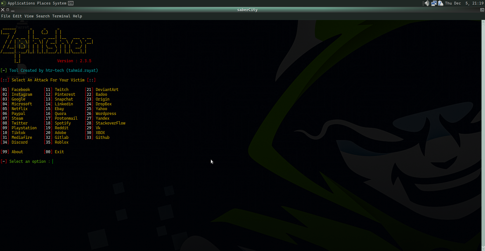
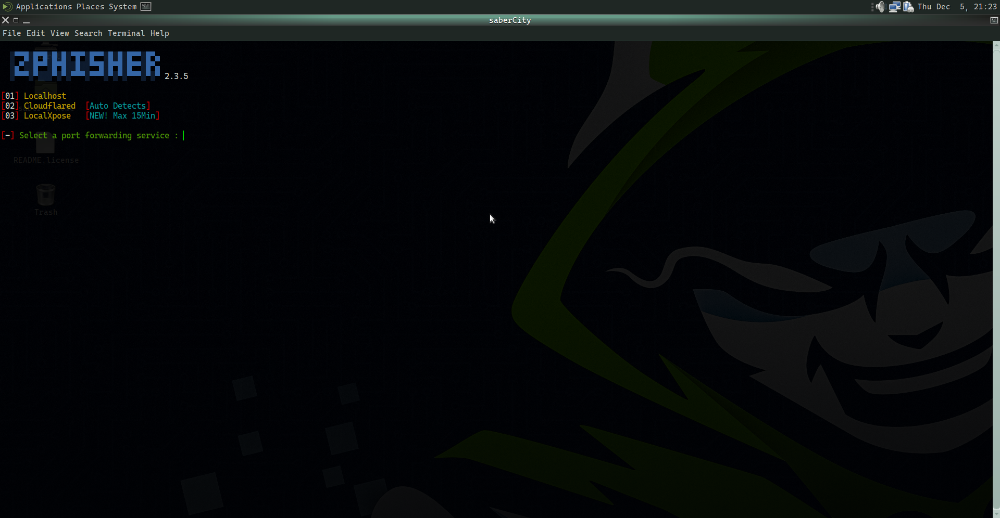
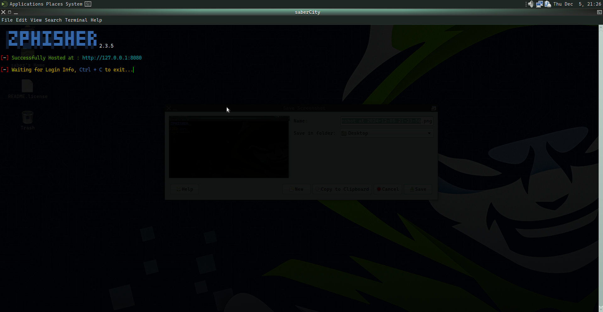
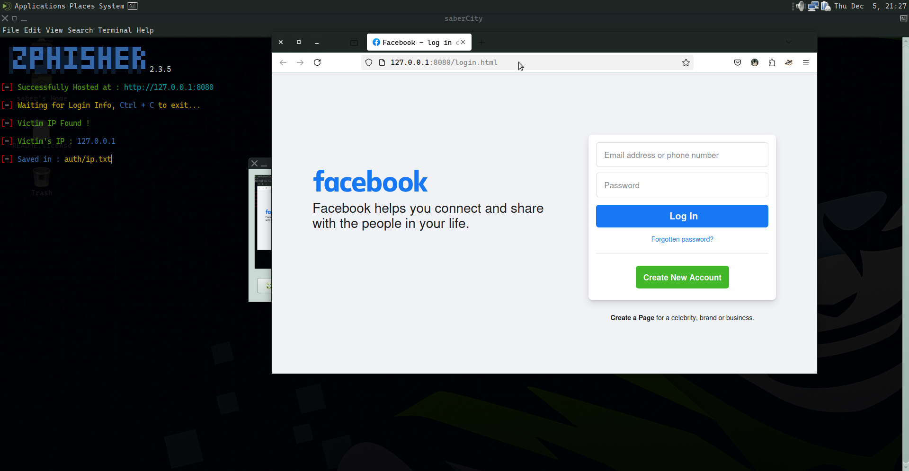
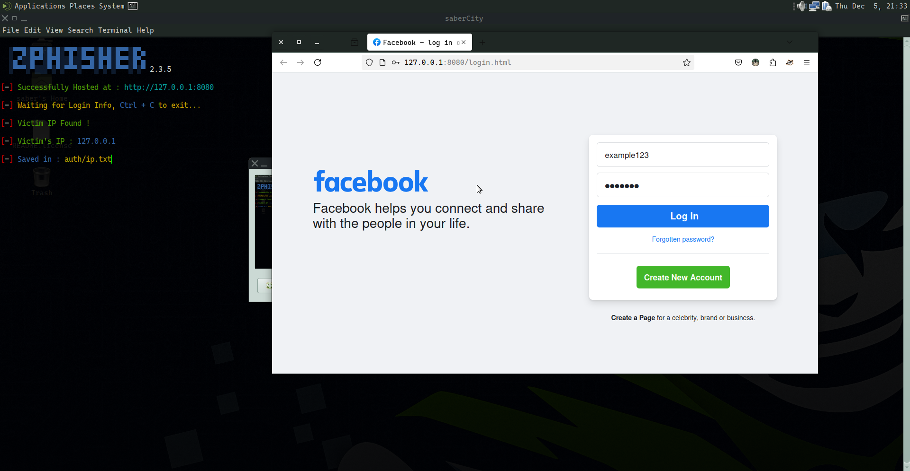
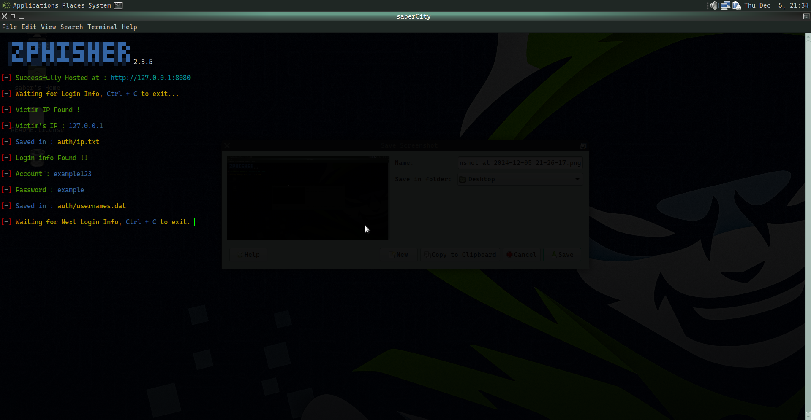

Blog Posts
-
Java Applet
Java applets are pretty old school now and not widely used anymore because modern web technology like html, css, js has taken over, but backen in those days , appplets in java were used as a key tool for creative a interactive web projects
sample code
click to view code
import java.applet.Applet;
import javat.awt.Graphics;
public class HelloWordApplet extends Applet{
public void paint(Graphics g){
g.drawString("Hello world", 20, 20)
}
}What's the process ?
- java.applet.Applet is the base cass for creating applet, and the java.awt.Graphics is the class that provides context for drawing on the applet
- we created the class HelloWordApplet class which extends the Applet class
- paint method is used to drawing purposes
- Graphics class drawstring is used to draw string on cooridanate (20,20)
in order to run this applet , we hvae to create html and link it thee using applet tag like this
this create a simple canvas like design that displays string hellow world.click to view code
<applet code = "HelloWordApplet">
</applet>How to run?
just compile the java code and openup that html where u used the applet,keep in note, ue interent explorer like no chromium browers to see changes as other chromimum based brower aint be supporting it
-
CORS
CORS [Cross Origin REsources Sharing], is like a secutiy guard for a web browser which decides wheather a web page can request resources from a diff domain than one it came from it basically allows servers who can access their resources and how, this helps prevent security issues like data theft, or unauthorized access
How to enable CORS?
lets take a custum python backend framework, flask, thier is
flask-corspackage which u can install viapip install flask-corsbackend code
from flask import Flask
from flask_cors import CORS
app = Flask(__name__)
CORS(app)
@app.route('/')
def hello_world():
return 'hello, cors!'
if __name__ == '__main__'
app.run(debug=True)
this enables CORS for all routesaccessing in frontweb
make sure u have Axios installed or install it via
nom install axioswhich helps to make route requests to backend server
so lets say u have it installe dnad in a react exmaple.tsx, u create a component to send req, which should look like this while sending requestVIEW CODE
axios.get('api route for server')
.then(reposnse => {
//whatever logic u want it
}
) -
What is Phising attack ?
A Phising attack is a cybercrime which tries to steal your personal information by pretending to be someone you trust, solely focusing on tricking peoples into giving thier sensetive information like passwords, credit details and others
How is it performed?
generally Phising attack means to replicate same structure but in a malicious factor, their are various way, hackers devlop their own code forms and send to thier victims, or their are various tools available like z-phisher,
- first of all a usual hacker or any scammer develops thier own looking social login form or replica or use pre built tools like Z-Phisher
- they host their masked malicious site to any other platform and they would have pre bult databse connected to it, so basically whatevyer u enter thinking it real site, eveything is kept tracked and logged by the attacker
here is the stepwise procedure how they pullit off:-
This is the interfact of zphisher,showcasing all the credential forms it replcates:
 -
suppose an attacker targets a user to steal its facebook credentials, in this sceneratio the attacker would generate a corresponding login form , in this case its 1;

various hosting options are provided such as local enviroment, exposing locales to ineternet and others, lets assume attacker choses local for now - once the attacker opts to run the phising page locally, the tool displays port which it being hosted on
 -
the attacker can now share the live phising page link with target , sinceits exact copy of real page, victim wont notice anything, upon visiting, victim ip is captures as defualt;
 -
believing the page to be legit, the victim enter his credential details and after victim enters login, evey data will be forwareded to attacker database


How to get aware of this?
- verify URLS
- Avoid clicks
- Secure connections
- educate yourself
- use mfa layers on your social site